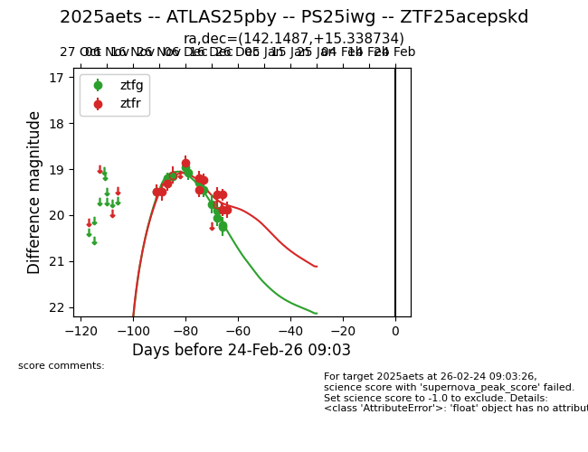
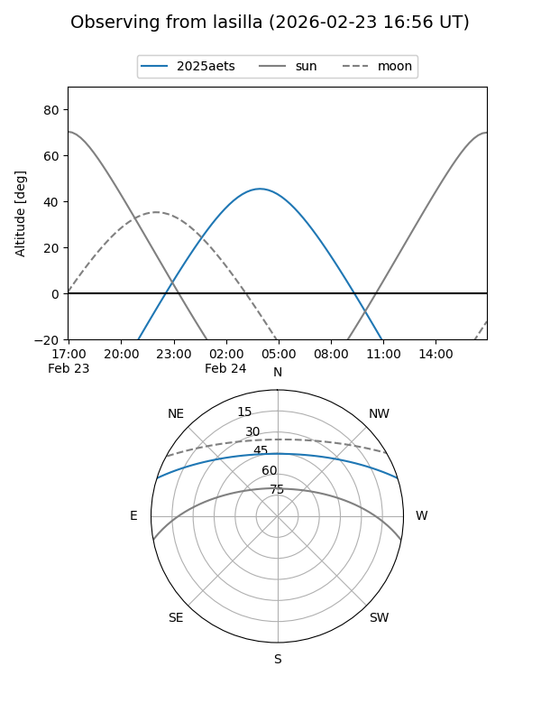
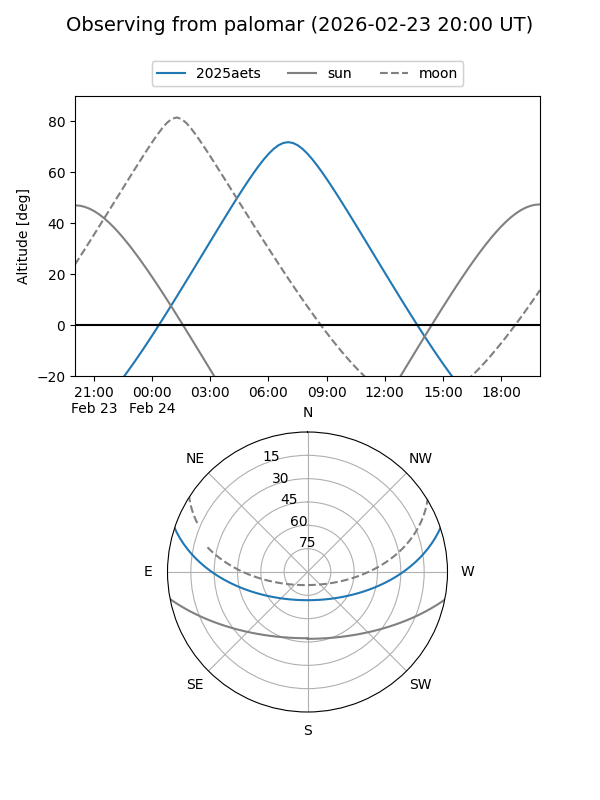
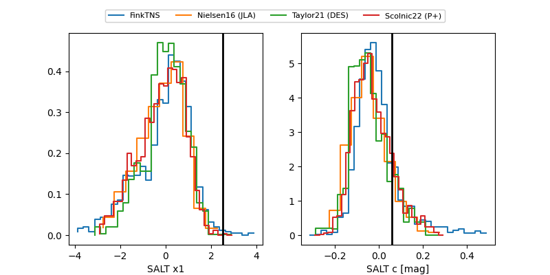

2025aets
Target 2025aets at 2025-12-31 18:00
Aliases and brokers:
FINK: link
Lasair: link
ALeRCE: link
TNS: link
YSE: link
alt names
ZTF25acepskd (ztf,fink_ztf)
2025aets (tns,yse)
ATLAS25pby (atlas)
PS25iwg (panstarrs)
Coordinates:
equatorial (ra, dec) = 142.1487,+15.33873
equatorial (HMS+DMS) = 09:28:35.69,+15:20:19.44
galactic (l, b) = (216.2318,+41.61454)
Flags:
Photometry:
last atlasc=19.31, ztfg=20.26, ztfr=19.88
2 atlasc, 13 ztfg, 11 ztfr detections
Lightcurve

Visibility


Additional plots
